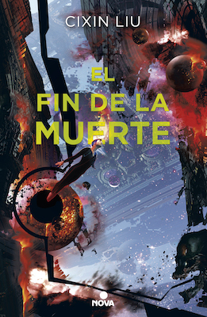

El fin de la muerte (Trilogía de los tres cuerpos, #3)
Reseña por Jorge I. Zuluaga

Ver reseña en GoodReads (necesita cuenta)
Para quiénes no han leído los libros anteriores, el mensaje es claro: ¡no se les ocurra leer ni el primer párrafo de "El fin de la muerte"! Vayan ya y consigan los demás libros.
Para quiénes ya leyeron "El problema de los dos cuerpos" y "El bosque oscuro", solo puedo decirles que aunque no lo parezcan, las dos novelas anteriores son incompletas.
Debo confesar que me costo empezar a leer "El fin de la muerte" justamente porque pensé que "El bosque oscuro" había agotado todo lo que se podía contar. ¡Que equivocado estaba!
La característica más notable de esta nueva novela es que combina dos historias paralelas. Al principio, incluso llegue a pensar que se trataba de una historia anterior al "tiempo de la crisis" (durante el que se desarrolla la mayor parte de "El bosque oscuro") y que por lo tanto era una especie de "precuela". Me aburría volver en el tiempo después de los acontecimientos asombrosos de "El bosque oscuro."
Al contrario "El fin de la muerte" no solo es la continuación de las novelas anteriores, sino que también proyecta la historia mas allá de lo que el fiel lector fiel de la trilogía podría esperar (¡muero de ganas de soltarles un spoiler!... pero aguantaré)
Lo que más me ha sorprendido de este último libro es la manera como Liu Cixin estira más allá de todo límite imaginable el concepto de "futurismo".
No puedo imaginar obra alguna de la literatura de ciencia ficción pasada o presente en el que se hayan desarrollado con el mismo lujo de detalles técnicos tecnologías que podrían estar a varios siglos en el futuro, desde sistemas avanzados de propulsión, hibernación, defensa, vestuario, alimentación, materiales, etc. como las que describe Cixin en esta novela.
Como sucede con los libros anteriores de la trilogía, más allá de tratarse de un aburrido libro lleno de tecnicismos ficticios, Liu Cixin logra en "El fin de la muerte" introduce y desarrolla personajes y situaciones humanas de una profundidad apenas comparable a las de los personajes de los clásicos de la literatura.
Lo dije en mis reseñas anteriores y lo confirmo con este nuevo libro: estamos ante un grande de la literatura y posiblemente ante un nuevo Julio Verne.
He descubierto que en mis conferencias y clases de astronomía, e incluso en conversaciones espontáneas alrededor del tema, me es imposible no citar un aparte de los libros de esta trilogía. Ninguna obra de ficción o no ficción me había afectado tanto (en un sentido positivo).
La he recomendado a tantas personas que temo que quienes no logren conectarse con ella como yo lo he hecho, terminen acusándome de exagerado y de sobredimensionar una obra que tal vez no es del disfrute de todo el mundo.
Debo reconocer que las novelas de la trilogía muy a menudo se embarcan en descripciones de personajes y situaciones que parecerían no tener nada que ver con la historia central.
Solo puedo decirles después de leer los tres libros que de todas las historias que Liu Cixin teje en este libro o en los anteriores, no pude encontrar una sola que fuera prescindible en algún grado.
Con esta trilogía me ha pasado algo similar a lo que sentí con El Quijote: quisiera volver el tiempo atrás y empezar nuevamente a leer los libros sin saber que va a pasar, tan solo para volver a sentir la sorpresa y asombro que estas historias me han causado.